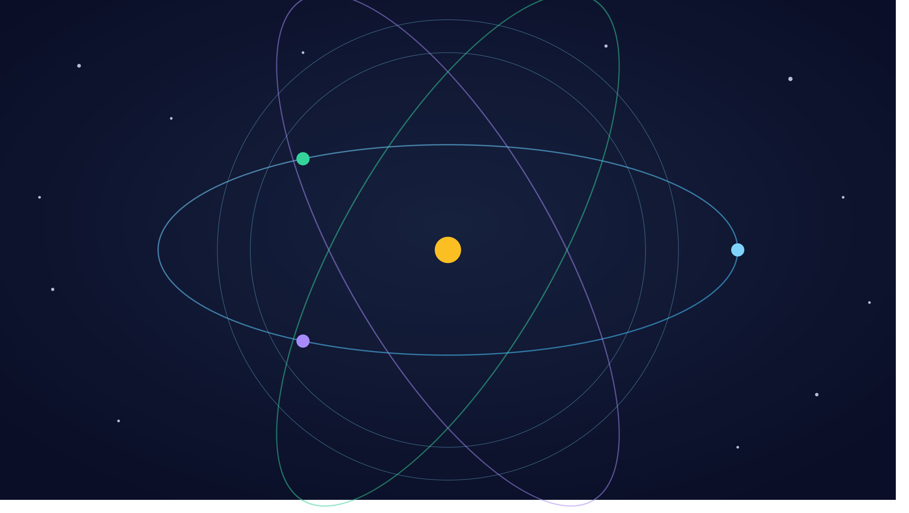

Je m'appelle Augustin BIOLLAY, actuel étudiant en L3 de Physique Fondamentale au Magistère de Physique d'Orsay.
J'ai créé ce site dans le but de partager ma passion pour la physique, notamment aux personnes qui en ont gardé un mauvais
souvenir du collège/lycée et qui disent détester cette matière ou que celle-ci ne les intéresse pas.
L'objectif de ce site est multiple :
Voici comment ce site fonctionne : Vous pouvez naviguer sur celui-ci grâce au menu en haut de cette page en cliquant sur les différents liens. Voici ce que vous retrouverez dans chacun de ceux-ci:
Voici quelques conseils de lecture en fonction de votre situation :